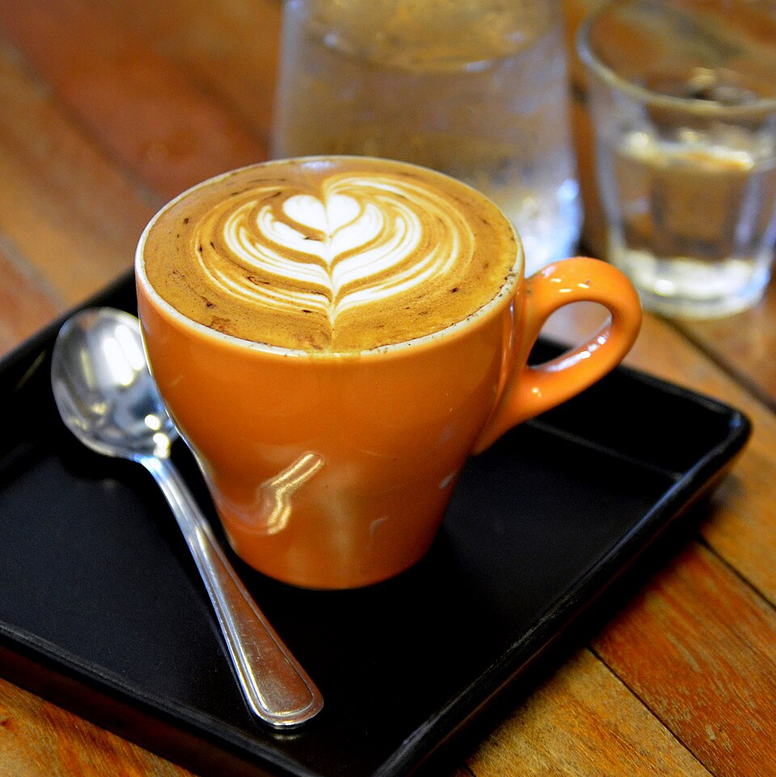

Specialty Coffee
Featuring single-origin beans and custom roasts from Hatchet Coffee in Boone, NC, precision espresso pulls, house-crafted black walnut syrup, and local bakery pastries.
Explore Coffee Craft →Welcome to The Hobbyist, Villa Heights' neighborhood gathering room at 2100 North Davidson Street. We seamlessly evolve from a sunlit specialty coffee house serving Hatchet Coffee and scratch pastries by morning into a bustling bottle shop, craft taproom, and cocktail lounge serving renowned Espresso Martinis by night.

Carefully sourced beans, rare craft cans, and handcrafted cocktails.
Featuring single-origin beans and custom roasts from Hatchet Coffee in Boone, NC, precision espresso pulls, house-crafted black walnut syrup, and local bakery pastries.
Explore Coffee Craft →14 rotating craft draft beer lines alongside over 250 curated cans and natural wines in our refrigerated bottle shop, available to enjoy on-premise or take home.
Discover Bottle Shop →Anchored by Charlotte's favorite velvety Espresso Martini shaken with freshly pulled espresso, alongside classic bourbon Old Fashioneds, seasonal spritzes, and amari.
View Cocktail List →Open daily from early morning through late evening. Free customer parking lot, high-speed Wi-Fi, lush botanical seating, and warm Charlotte hospitality.
Hours, Co-Working & Directions →